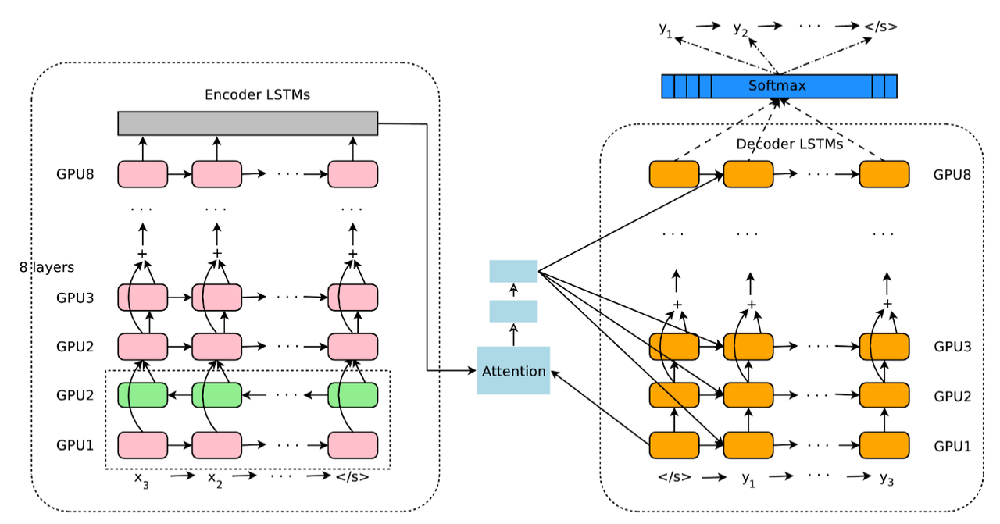

RNN + Attention(Google Translate)
Google’s Neural Machine Translation System: paper, blog. Interesting approaches were used:
- They provide stacked LSTM with residual connections: input to the next layer is output from previous one element wise summed with initial input.
- Train model first with Adam optimizer, and after with simple SGD.
